長期トレンド
JKMとJEPXシステムプライスの推移グラフ
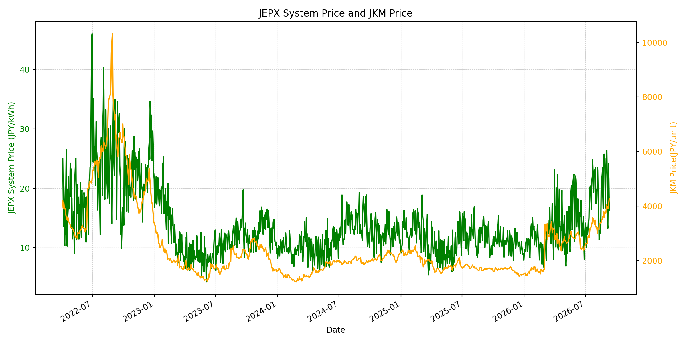
WTIの推移グラフ
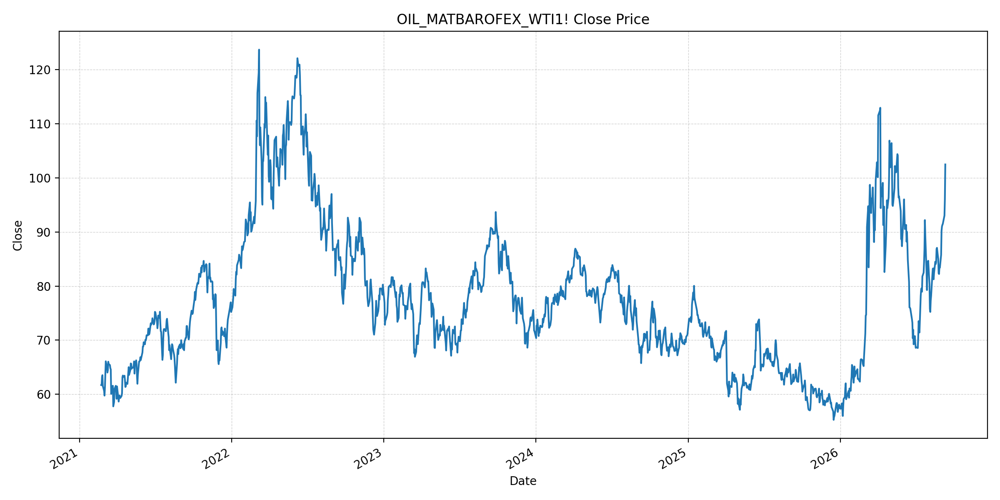
JEPXエリアプライスグラフ（直近一年分）
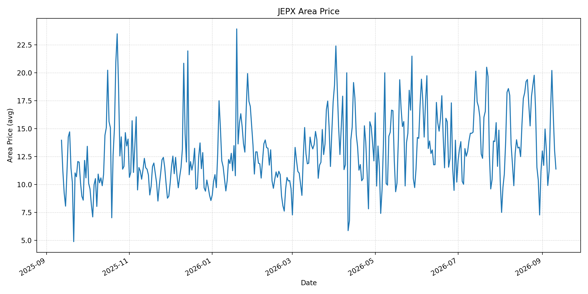
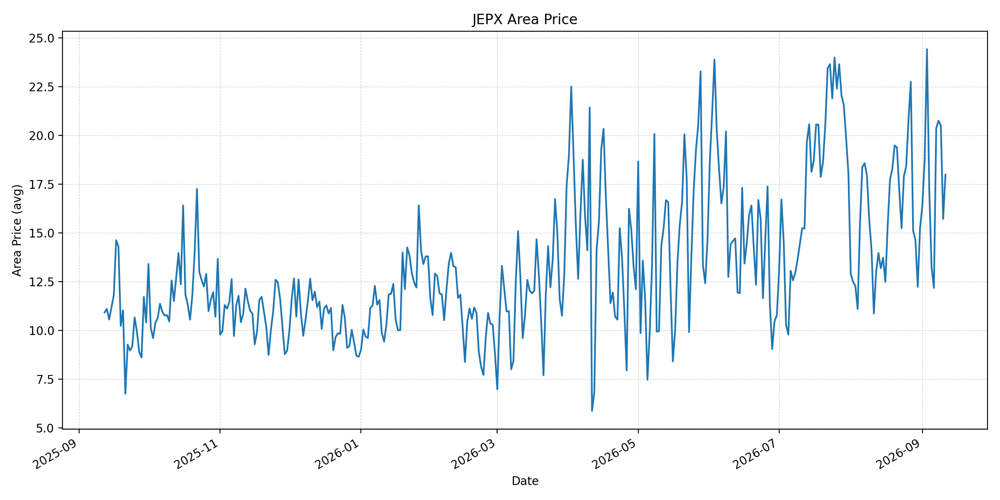
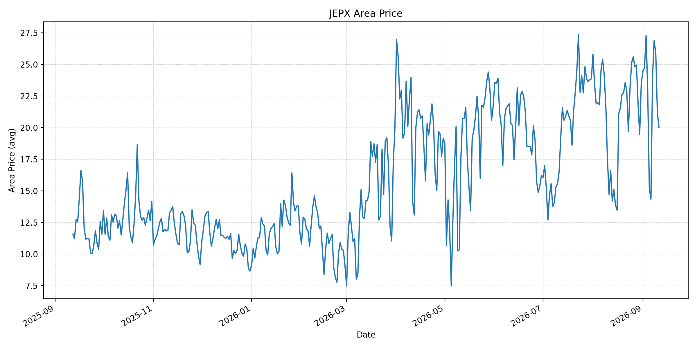
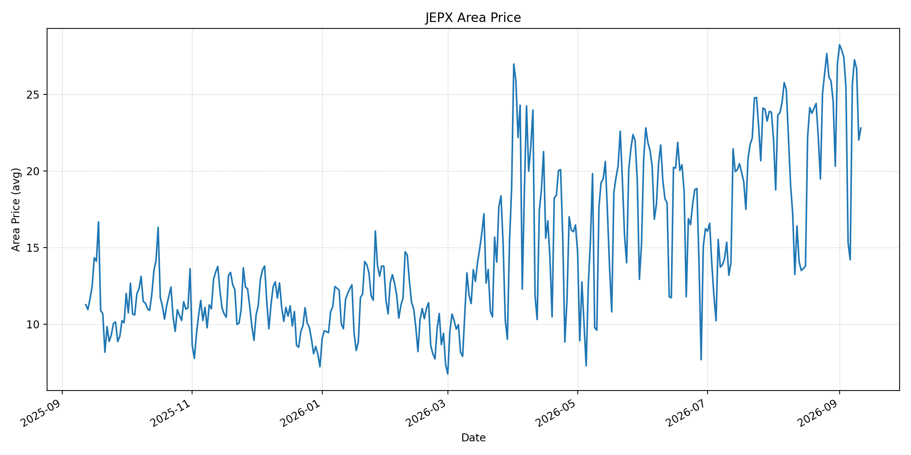
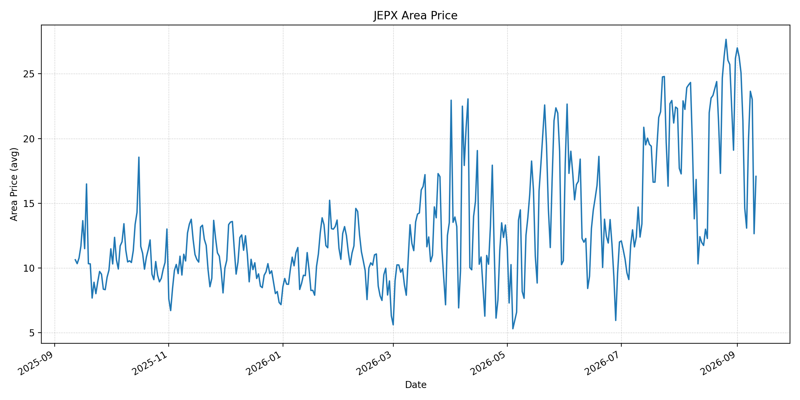
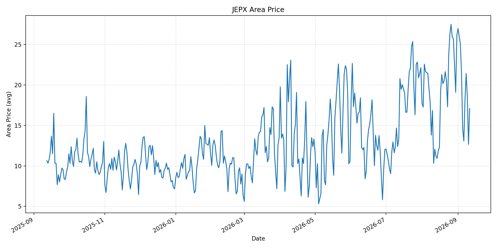
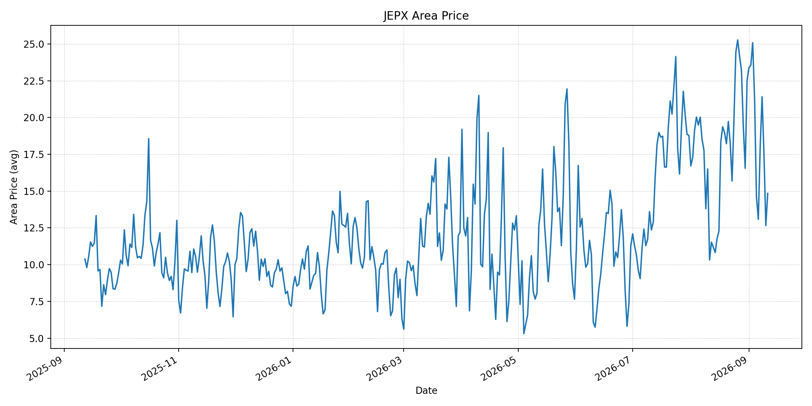
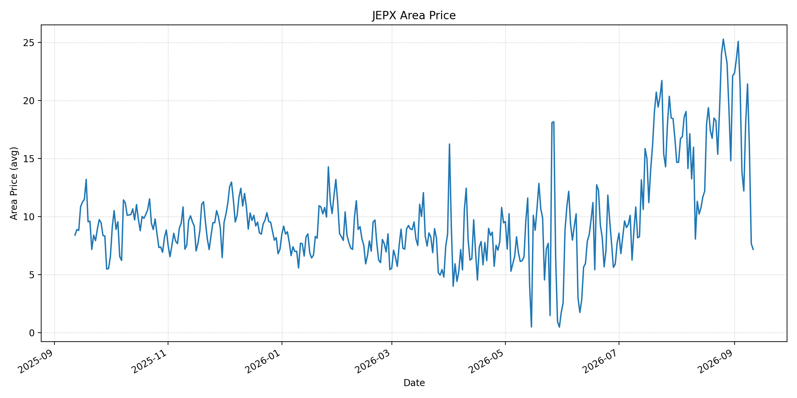
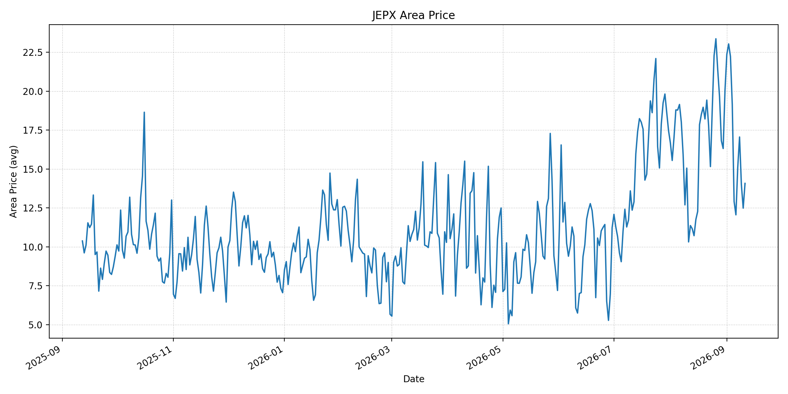
短期トレンド
JKMとJEPXシステムプライスの推移グラフ
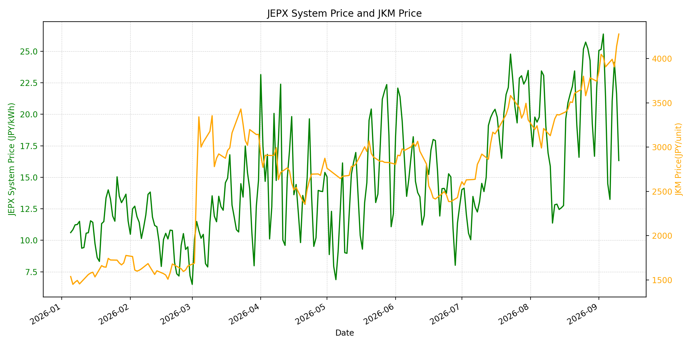
WTIの推移グラフ
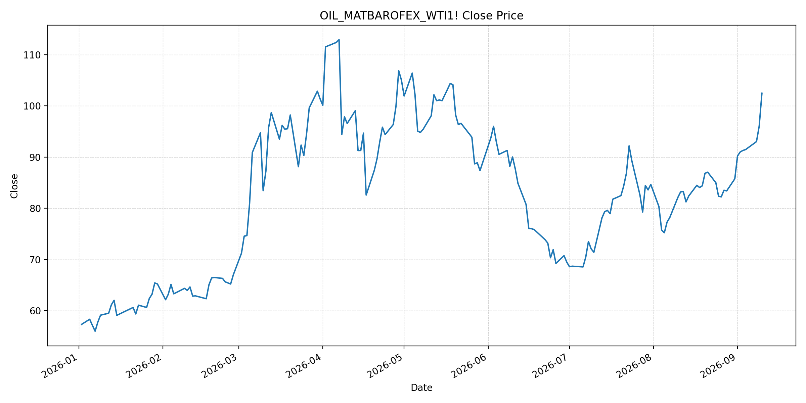
JEPXシステムプライス
最新値は 2026-09-11 分、先週終値は 2026-09-04、先月終値は 2026-08-31 時点の直近値です。
| エリア | 当日価格 | 前日価格 | 前日比（％） | 先週終値 | 先週比（％） | 先月終値 | 先月比（％） | 過去最高値 | 最高値比（％） |
|---|---|---|---|---|---|---|---|---|---|
| システム | 17.60 | 16.33 | 7.78 | 21.36 | -17.60 | 22.10 | -20.36 | 64.06 | -72.53 |
| 北海道 | 11.38 | 13.06 | -12.86 | 12.98 | -12.33 | 11.18 | 1.79 | 73.92 | -84.60 |
| 東北 | 17.99 | 15.72 | 14.44 | 17.15 | 4.90 | 15.25 | 17.97 | 84.92 | -78.81 |
| 東京 | 20.01 | 21.20 | -5.61 | 22.91 | -12.66 | 23.47 | -14.74 | 86.13 | -76.77 |
| 中部 | 22.80 | 22.01 | 3.59 | 25.45 | -10.41 | 27.01 | -15.59 | 52.06 | -56.21 |
| 北陸 | 17.08 | 12.65 | 35.02 | 21.41 | -20.22 | 26.18 | -34.76 | 46.48 | -63.26 |
| 関西 | 17.08 | 12.65 | 35.02 | 21.35 | -20.00 | 26.17 | -34.73 | 46.48 | -63.26 |
| 中国 | 14.84 | 12.65 | 17.31 | 21.30 | -30.33 | 22.51 | -34.07 | 46.48 | -68.08 |
| 四国 | 7.17 | 7.67 | -6.52 | 21.30 | -66.34 | 22.12 | -67.59 | 46.48 | -84.58 |
| 九州 | 14.08 | 12.49 | 12.73 | 19.13 | -26.40 | 20.06 | -29.81 | 40.54 | -65.27 |
LNG先物価格
最新値は 2026-09-10 の LNG(close) です。先週終値は 2026-09-03、先月終値は 2026-08-31 時点の直近値です。
| 当日価格 | 前日価格 | 前日比（％） | 先週終値 | 先週比（％） | 先月終値 | 先月比（％） | 過去最高値 | 最高値比（％） |
|---|---|---|---|---|---|---|---|---|
| 4276.00 | 4137.00 | 3.36 | 4015.00 | 6.50 | 3744.00 | 14.21 | 10319.00 | -58.56 |
石油先物価格
最新値は 2026-09-10 の OIL(close) です。先週終値は 2026-09-03、先月終値は 2026-08-31 時点の直近値です。
| 当日価格 | 前日価格 | 前日比（％） | 先週終値 | 先週比（％） | 先月終値 | 先月比（％） | 過去最高値 | 最高値比（％） |
|---|---|---|---|---|---|---|---|---|
| 102.48 | 96.05 | 6.69 | 91.30 | 12.25 | 85.76 | 19.50 | 123.70 | -17.15 |
ニュース
イラン情勢に関するニュース
- 9月10日報道では、米国がイランの石油タンカー5隻を沈没させた後、イランがホルムズ海峡付近の10隻を攻撃したと発表しました。双方の船舶攻撃として戦争開始以来最大規模とされています。参照: Reuters, 2026-09-10
- 同報道では、タンカー乗組員少なくとも1人の死亡と1人の行方不明が伝えられ、海上安全の不確実性が高まっています。参照: Reuters, 2026-09-10
ホルムズ海峡経由の石油・LNGに関するニュース
- 船舶攻撃の応酬を受け、ブレント原油先物は100ドルを超えました。ホルムズ海峡の輸送障害が原油・LNGの到着時期と輸送コストを押し上げるリスクです。参照: Reuters, 2026-09-10
- 海事安全関係者は、UAEのコール・ファカン港でLNGタンカーが損傷したと報告しました。現物LNGの船腹・港湾稼働に対する追加リスクとして注視が必要です。参照: Reuters, 2026-09-10
ホルムズ海峡経由でない石油・LNGに関するニュース
- イランと連携するフーシ派は9月10日、イエメンのモカ港を掌握し、紅海南口のバブ・エル・マンデブ海峡への影響力を強めたと報じられました。参照: AP, 2026-09-10
- フーシ派の紅海沿岸での進出は、サウジ船舶と輸出のリスクを高め、ホルムズ海峡を回避する供給ルートの代替性も低下させる可能性があります。参照: Reuters, 2026-09-10
日本国内のイラン戦争に関係するニュース
- 過去24時間で、イラン戦争を理由にJEPXの制度または国内の電力需給運用を直接変更する主要な新規公表は確認できませんでした。
- JEPXの9月11日システムプライスは17.60円/kWh、総約定量は1,119,263MWhでした。燃料高と当日の卸電力価格は同方向に動くとは限らず、需給要因と併せた監視が必要です。参照: JEPX Information, 2026-09-11
インサイト
ニュース事項による日本の電力市場への影響（短期：数日〜1週間）
- JEPXシステムは 17.60 円/kWhで前日比 7.78% 上昇した一方、先週比は -17.60% です。中部、北陸、関西の上昇が目立つものの、燃料相場の急伸を当日のスポット価格だけで説明することはできません。
- LNGは 4276.00 で前日比 3.36%、WTIは 102.48 ドルで 6.69% 上昇しました。ホルムズ海峡での船舶攻撃とLNGタンカー損傷報道が続く間、次回調達分の燃料コストには上振れ圧力がかかる可能性があります。
- 紅海側のモカ港・バブ・エル・マンデブ海峡のリスクも重なっています。短期では、ホルムズ海峡の通航量、港湾の稼働、船舶保険料、代替航路への転換状況を日次で確認します。
ニュース事項による日本の電力市場への影響（長期：1ヶ月〜半年）
- システム価格は先月比 -20.36% ですが、LNGは 14.21%、WTIは 19.50% 上昇しています。輸送障害が長期化すれば、火力の限界費用と小売調達コストへ波及する可能性があります。
- エリア間のばらつきも大きく、東北は先月比 17.97%、北海道は 1.79% の一方、四国は -67.59% です。燃料価格だけでなく、エリア別の需給・連系線制約を分けて評価する必要があります。
- ホルムズ海峡と紅海の双方で輸送リスクが高まる場合、調達先の分散、LNG在庫、長期契約の柔軟条項、代替ルートの実効性が重要になります。戦闘の継続期間と海上安全措置の実効性が主な不確実要因です。